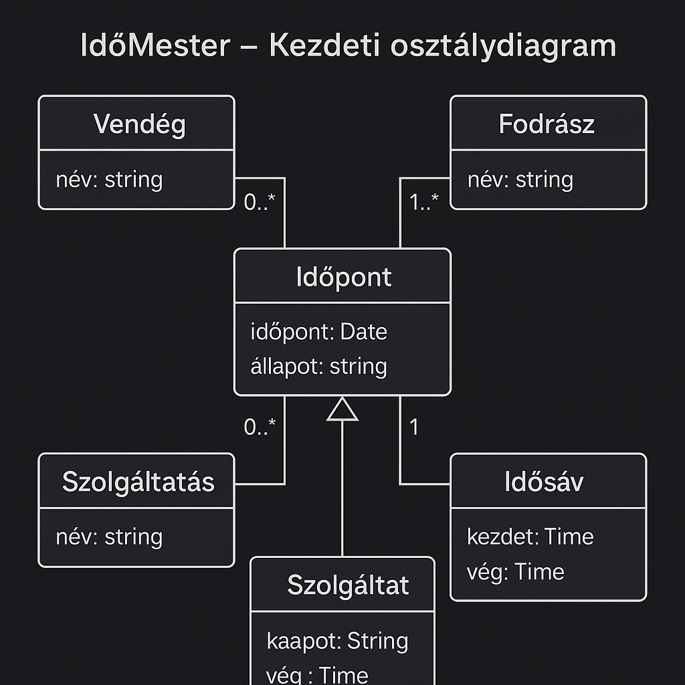

Analízis modell – IdőMester
Objektumorientált analízis a fodrász szalon időpontfoglaló rendszerhez.
1. Cél és hatókör
Az analízis modell célja, hogy a fodrász szalon működését technológiafüggetlen, objektumorientált formában írja le. A modell a fő fogalmakat (Vendég, Stylist, Szolgáltatás, Időablak, Foglalás) és azok kapcsolatait rögzíti, hogy stabil alapot adjon a rendszertervhez és az implementációhoz.
2. Fő fogalmak és entitások
2.1 Szereplők
- Vendég: időpontot foglal, módosít vagy lemond.
- Stylist: szolgáltatást nyújt, időbeosztással rendelkezik.
- Admin: a szalon működéséért felel; kezeli a szolgáltatás-listát, nyitvatartást és stylistokat.
2.2 Entitások (fogalmi szinten)
| Entitás | Leírás | Példa attribútumok |
|---|---|---|
| Vendég | Foglalást létrehozó személy. | név, telefonszám, e-mail (opcionális) |
| Stylist | A szolgáltatást végző fodrász. | név, specializáció, elérhetőség |
| Szolgáltatás | Konkrét fodrász tevékenység. | megnevezés, időtartam, ár |
| Időablak | Foglalható idősáv egy adott napon. | kezdés, befejezés, stylist |
| Foglalás | Vendég által lefoglalt szolgáltatás. | vendég, stylist, szolgáltatás, időablak, státusz |
3. Analízis modell diagram
Az IdőMester rendszer fogalmi analízis modellje a fő entitásokat és kapcsolataikat mutatja be (Vendég, Stylist, Szolgáltatás, Időablak, Foglalás):

4. Kapcsolatok és üzleti szabályok
4.1 Kapcsolatok
- Vendég – Foglalás: egy vendégnek több foglalása is lehet.
- Stylist – Foglalás: egy stylistnek több foglalása lehet egy napon, de az időablakok nem fedhetik egymást.
- Szolgáltatás – Foglalás: egy foglaláshoz pontosan egy szolgáltatás tartozik.
- Stylist – Időablak: egy időablak mindig egy stylisthez kötődik.
4.2 Fő üzleti szabályok
- Foglalás csak a szalon nyitvatartási idején belül hozható létre.
- Ugyanarra az időtartományra egy stylistnek csak egy aktív foglalása lehet.
- A szolgáltatás időtartama bele kell, hogy férjen a választott időablakba.
- Foglalás lemondása csak az időpont előtt egy konfigurálható határidőig lehetséges.
5. Kezdeti osztálydiagram
Az alábbi UML osztálydiagram a fő osztályokat (Vendég, Stylist, Szolgáltatás, Időablak, Foglalás) és azok kezdeti attribútumait, valamint kapcsolatait mutatja:
6. Tipikus használati esetek
6.1 Vendég időpontot foglal
- Vendég kiválasztja a szolgáltatást.
- Rendszer megjeleníti a választható stylistokat és szabad időablakokat.
- Vendég kiválasztja az időpontot, megadja az elérhetőségeit.
- Rendszer ellenőrzi az ütközéseket, majd létrehozza a foglalást.
6.2 Stylist megtekinti a napi beosztását
- Stylist megnyitja a naptár nézetet.
- A rendszer listázza a napra eső foglalásokat időrendben.
6.3 Admin módosítja a szolgáltatás-listát
- Admin új szolgáltatást vesz fel vagy meglévőt szerkeszt/inaktivál.
- A módosítások azonnal hatnak az új foglalásokra.
7. Összegzés
Az analízis modell rögzíti az IdőMester rendszer legfontosabb fogalmait és szabályait. A fogalmi és osztálydiagramok alapján a következő lépésben elkészíthető a részletes rendszerterv, az adatbázis-terv és az implementációs terv, miközben a doménszabályok változtatás nélkül átvihetők a további tervezési fázisokba.